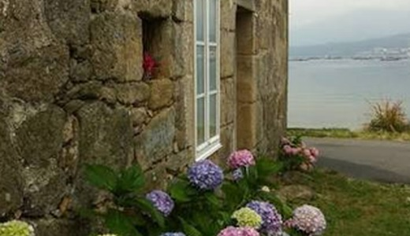
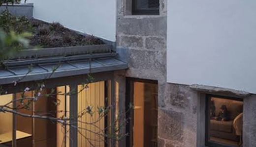
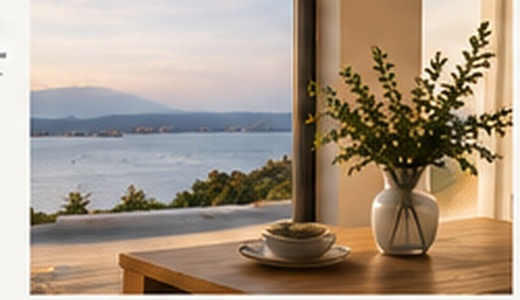

01
We get to know your home
We visit it, check it and understand what it needs.
Home Watch and care for second homes in Galicia, for owners who live away.
Let’s talk about your home→Regular supervision is our core service. We take care of what really matters, inside and outside your home.

We visit it, check it and understand what it needs.
We make sure everything is in order, inside and out.

We manage issues and coordinate trusted professionals.

You receive clear updates, photographs and alerts when needed.
It is not just about visiting the property. It is about giving you clear information when you cannot be there.
Images showing the condition of the home and anything that needs attention.
We visually check the interior, exterior and the elements included in the visit.
If we notice anything unusual, we let you know clearly.
You receive a summary of the visit and, when needed, a recommended course of action.
We adapt the service to your home, its location and the time you spend away.
General condition, systems and surroundings.
Coordination with trusted professionals.
Small tasks and checks to keep your home ready.
Clear information after every visit.
One local person, close and available.
I’m Tatiana, the person behind HabitarAtlántico.
For almost a decade I have worked in an environment where responsibility, attention to detail and the ability to handle unexpected situations are part of everyday life.
I created HabitarAtlántico because I understand what it means to have a life far from a home you want to preserve, enjoy and care for.
My goal is simple: when you cannot be there, you know someone is looking after it.
Tell us where your home is, how you use it and what you need. We’ll look at your situation and explain how we can help.